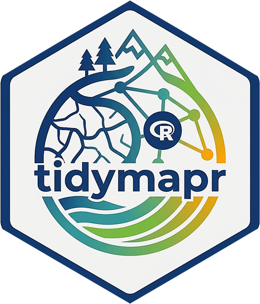

Torus-translation habitat association test (ForestGEO)
stems_habitat_test.RdTests whether a species' density differs among habitat classes by shifting the habitat map on a torus while keeping relative habitat structure (Harms et al. 2001). Observed mean density per habitat is compared to the null distribution from torus shifts.
Usage
stems_habitat_test(
data,
habitat,
species = species,
habitat_col = "habitat",
grid = 20,
nperm = 999,
mindbh = NULL,
dbh_unit = c("mm", "cm"),
seed = NULL
)Arguments
- data
Stem or tree table with
gx,gyand species.- habitat
Either a data frame with
gx,gy(quadrat centres) and a habitat class column, or a column name already ondataafterstems_habitat().- species
Species column.
- habitat_col
Name of the habitat class column in
habitat(or indatawhenhabitatis a column name).- grid
Quadrat size in metres (ForestGEO default 20).
- nperm
Number of torus shifts.
- mindbh
Optional minimum DBH filter.
- dbh_unit
"mm"or"cm".- seed
Optional RNG seed.
Value
A tibble (tmr_stems_habitat_test) with species, habitat,
observed density, null mean, and two-sided permutation p-value.
References
Harms, K. E., Condit, R., Hubbell, S. P. and Foster, R. B. (2001). Habitat associations of trees and shrubs in a 50-ha neotropical forest plot. Journal of Ecology, 89, 947-959. doi:10.1111/j.1365-2745.2001.00615.x
Examples
stems <- geo_example_stems()
q <- stems_quadrat(stems)
hab <- unique(q[c("quadrat", "gx", "gy")])
hab$habitat <- ifelse(hab$gx + hab$gy > 100, "ridge", "valley")
stems_habitat_test(stems, habitat = hab, nperm = 49, seed = 1)
#> # A tibble: 10 × 7
#> species habitat density null_mean p_value n_stems n_quadrats
#> <chr> <chr> <dbl> <dbl> <dbl> <dbl> <int>
#> 1 Ficus_sp ridge 0.417 0.514 0.46 5 12
#> 2 Ficus_sp valley 0.615 0.526 0.46 8 13
#> 3 Homalanthus_novoguineen… ridge 0.75 0.719 1 9 12
#> 4 Homalanthus_novoguineen… valley 0.692 0.721 1 9 13
#> 5 Intsia_bijuga ridge 1.42 1.19 0.62 17 12
#> 6 Intsia_bijuga valley 1.08 1.29 0.62 14 13
#> 7 Pometia_pinnata ridge 1.17 1.19 1 14 12
#> 8 Pometia_pinnata valley 1.23 1.21 1 16 13
#> 9 Pterocarpus_indicus ridge 1.33 1.10 0.36 16 12
#> 10 Pterocarpus_indicus valley 0.923 1.14 0.36 12 13